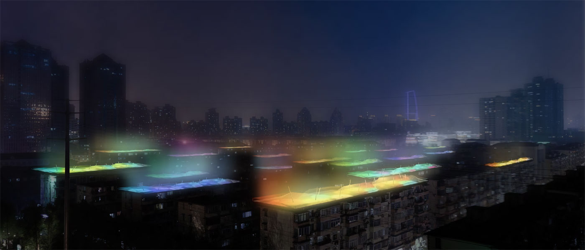
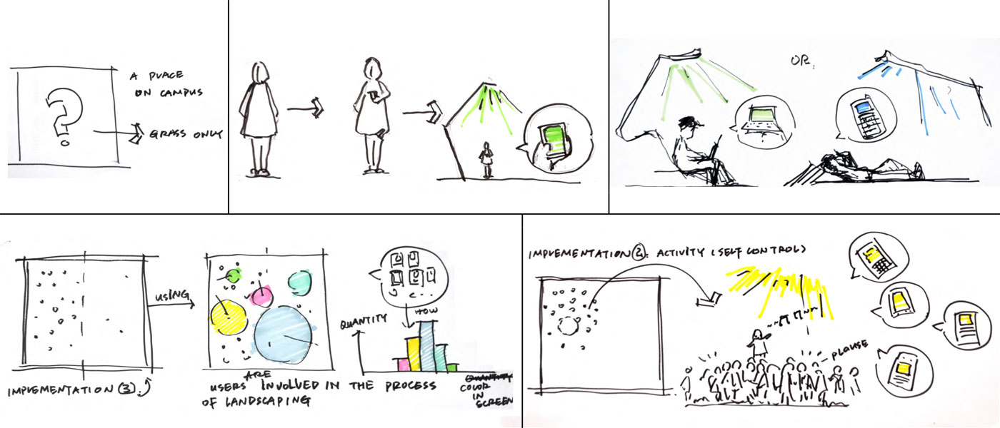
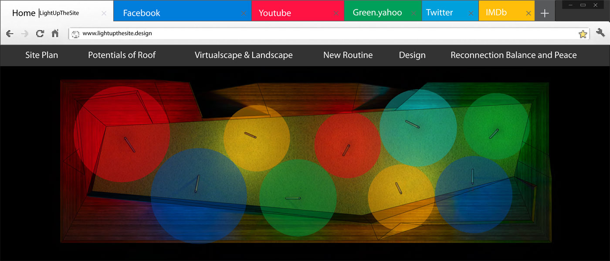
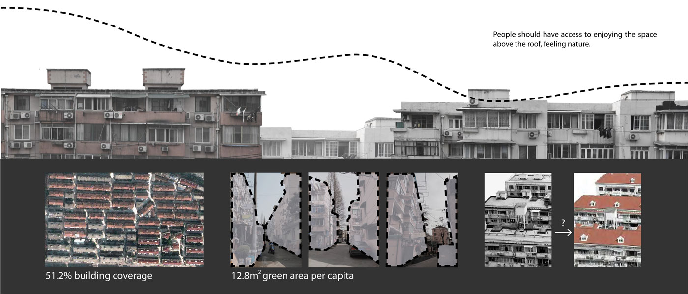
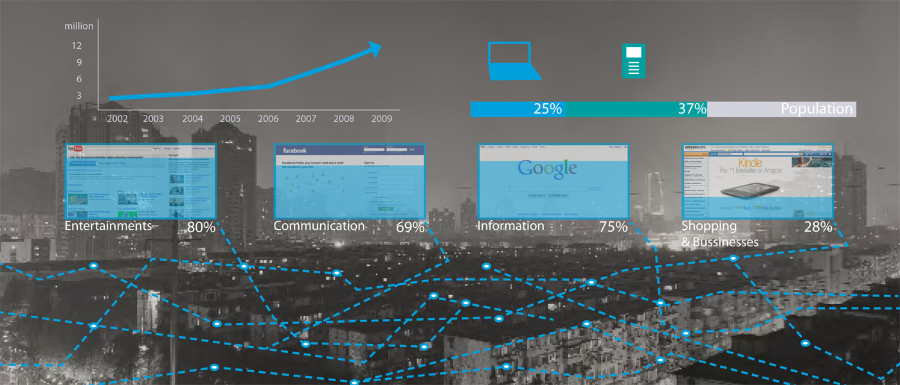
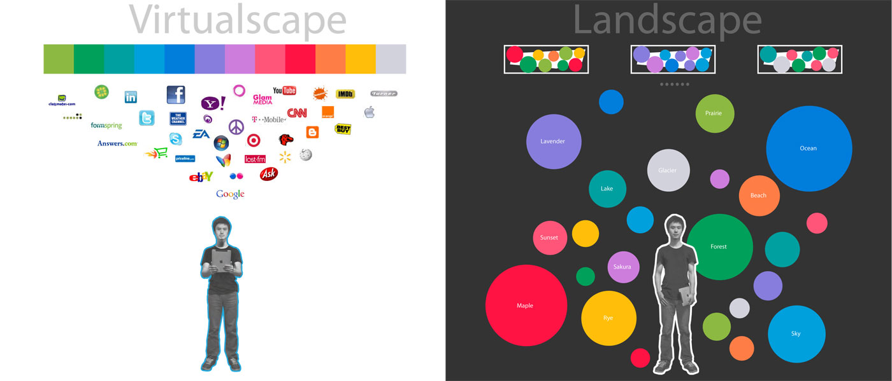
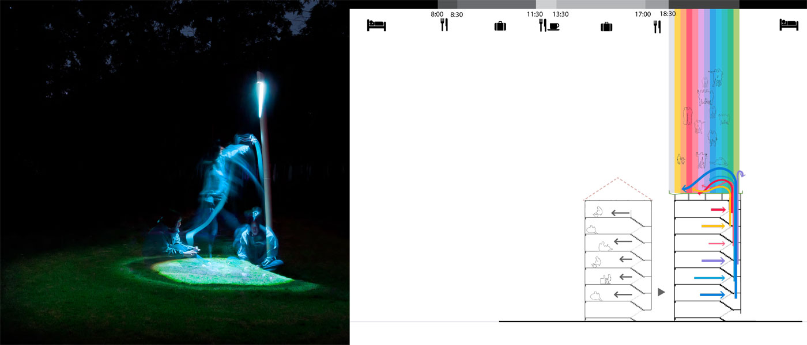
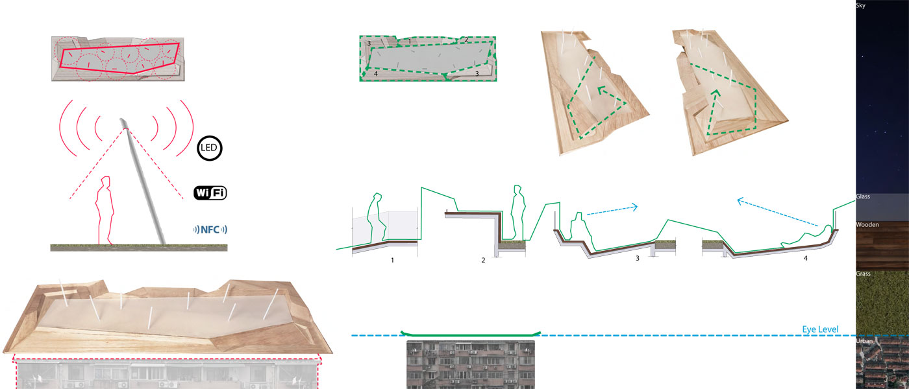
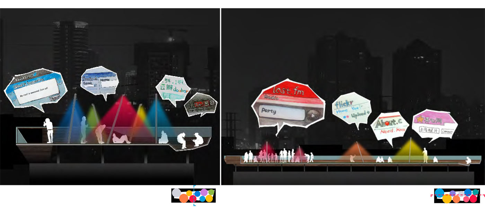
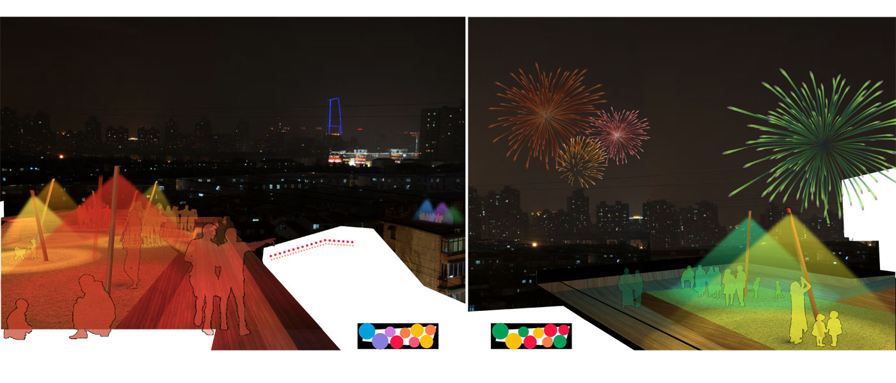

- 
Sketches of the idea The urban society is now closely related to the technology and people are more and more involved in the internet connections. To take use of the new tech and apply it to the real life, connecting the real and virtual life will in return make the technology more significant. That is the initial idea of this project. [view picture]
- 
Sketches of the idea The urban society is now closely related to the technology and people are more and more involved in the internet connections. To take use of the new tech and apply it to the real life, connecting the real and virtual life will in return make the technology more significant. That is the initial idea of this project.
- 
Plan The light is used as a media to connect the virtual and real world. The picture shows the plan view of the roof during the night.
- 
Current situation There is a lack of space in the city especially the densely built area in the downtown Shanghai. According to the site map, the built area covers 51.2% of the ground, which has lead to the negative space in between.
- 
Increasing use of the Internet 11.71 million people which is 62% of Shanghai's population usually surf the internet, and among them 60% uses their mobile devises to access the internet. 18.7 hours per week on average is spent on internet which has become more and more important in citizens' daily life.
- 
Virtualscape and Landscape There is a myriad of information carefully designed on the Internet and can be utilized as material for landscape design to provide totally new experience for users.

Technology Diagrams To convert virtualscape to landscape, this design applies certain knowledge in Computer Science and Electrical Engineering.
- 
Daily Routine The project can bring young people an alternative for their once monotone weekdays, aiming to provide outdoor space for them and better the city's night landscape at the same time. The color of website is designed as a part of the landscape, hence revitalizing human relationship and the connection between human being and nature.
- 
Lamppost & Platform Lampposts on the cenctral lawn create changing space with colorful spots , displaying activities on the Internet in real world, which can also be used as Wi-Fi antennas and NFC devices. The timber platform provides space for various acticities of people, and the concave of it can lower the eye level of users, guide their attention to the lawn and the upper space, offering them the feeling of being surrounded by nature.
- 
Sections People can have different activities on the roof. The Internet will be integrated into life through the use of the light. It will be a enjoyable experience of using the device on the roof.
- 
Perspectives People can have different activities on the roof. The Internet will be integrated into life through the use of the light. It will be a enjoyable experience of using the device on the roof.
Light Up the Site
The Internet has shown a huge impact on life. This project proposes implementing the Internet in the process of landscaping. By the creative use of special technology and the media of light, the connection of reality and virtual life will convert the unused rooftops into attractive outdoor spaces for Shanghai—a densely populated metropolis, and hence arouse creativity, connectivity, and community in real life. Project The Internet is developing in a dizzying speed and it has been applied in thousands of fields and changed our lifestyle, however, randomly in Landscape Design. This project explores a new way of Landscaping—implementing the Internet in Landscape Architecture. The Internet has brought the world to the era of information on one hand, it brought some people to a closed world with little exchange to real life on the other hand. The project proposal is to take use of the virtual “landscape”—colors particularly in this project—and convert it to a visible and interactive one in real world, linking two worlds together and individuals who are connected by networks but isolated in real life. Thus it can revitalize the common social connection by the use of the Internet, in other words, eliminate the invisible alienation using the invisible network. Site Shanghai is one of the most compact cities in the world. The greenery and public open spaces are so limited on the ground, and it thus leads to the narrowness of people’s social activity. Moreover, this city is dotted with pitched roofs, which were converted from the unused flat ones. The process has been set up since 1990s and is still on the go. The pitched roof has its benefit, however this way has led to the lost of precious upper spaces for such a crowed city. The project selects a community with unchanged rooftops in order to pose a new convention of the usage and it mainly presents design for a single rooftop to clearly illustrate the outcome. The community is located in Hongqiao District, which focuses on foreign affairs and has a large floating young population. With the additional use of the Internet, rooftops can be open spaces as well as places full of possibility for communication. This is an experiment for application of the Internet in the process of Landscape Design. Technology Technologies used in the project are maturely developed. The process of turning the data from personal devices to the visible and interactive light can be divided into three steps. The first one is data collection and filtration. A transparent proxy is built for the provided Wi-Fi to collect the information and filter the useful part—the data of color displayed on the webpage. In addition, legality will be confirmed by asking for authority before connecting to the network. The second part is data conversion. The Ethernet based fieldbus is implemented in this step and it links PLCs (programmable Logic Controllers) to the components as sensors, actuators, electric motors, and particularly console lights in this project. The third step is the lighting display. After the data processing of the field bus, information is turned valid for consoles to arrange colors of lighting. RGB LEDs (Light Emitting Diode) are selected to present, which can display different colors through the RGB system with good electric efficiency, fair lifetime and fast cycling. The selection of color is based on surveys for popular and commonly used web colors. Colors are divided into twelve intervals and each of them has its representative color. These colors are set to display through RGB LEDs in varying illuminations. In this project, time and the users’ relative locations (defined by three Wi-Fi emitters) are the basis of the lighting regulation: 12 thematic colors of most frequently used webpages in the latest three minutes are selected and three sizes of spots and illumination represent frequency and proportion respectively. Moreover, according to the number of the users, only the nearby lights will be on or controlled when slightly used and a website will be built to support the creative and interactive use, as message board, informative Easter eggs and so on. The Infrastructure The infrastructure in this project is simple but for multipurpose. Lights play the main role, which arranges the space according to the color and the spot size. In addition, the shape of the light refers to traditional Chinese lantern, which may arise the feeling of home for those external young people in this city. Furthermore, NFCs (Near Field Communication) are built at the bottom of the lampshades, which allow people to exchange information with the internet: users can get riddles by simply holding their devices close to the NFC on the lampshade on the night of the Lantern Festival, or just leave some words on the given website as message board on a usual day. Due to the restricted room on the rooftop, only two other elements are inserted into this space: the continuous bench and the wooded platform. The continuous bench plays the role of seat, desk, banister, and electric power source, since there are built-in sockets in some parts of the bench. Moreover, taking the reflection of screen into consideration, the height of the bench of different sides are set in accordance with the seasonal and daily change of sunlight; Wooden platforms are in the different shapes and some with gradient. Both of them are designated for flexibility, creative use and convenience. Grassland The greenery on rooftop is quite difficult as known, especially for old houses, however with the new technology of the light roof greenery, comes the new chance for the upper spaces. Though the pitched rooftop can provide heat preservation and insulation, make the airscape of the city pleasing and promote the waterproof performance, the light greenery can fulfill all these functions, additionally it can offer great and comfortable public open spaces for people. Along with the Internet, more creative uses are involved in this project. The Wi-Fi not only attracts people to rooftops and provides a place for off-work time, but also protects the grassland in the way of periodically use—seasonally alter the area and strength of Wi-Fi provided, hence to change the activity space of people.